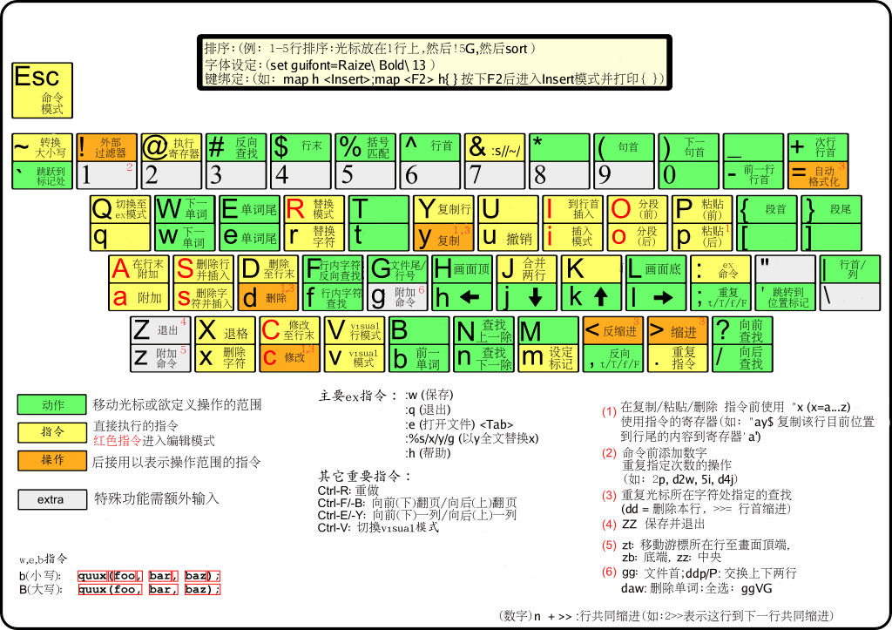

一、文本编辑器简介：
vi: Visual Interface，文本编辑器
文本：ASCII, Unicode
文本编辑种类：
行编辑器: sed
全屏编辑器：nano, vi
vim - Vi Improved （vi文本编辑器的升级版）
其他编辑器：
gedit 一个简单的图形编辑器
gvim 一个Vim编辑器的图形版本
二、Vim文本编辑器相关命令：
Vim是从 vi发展出来的一个文本编辑器。代码补全、编译及错误跳转等方便编程的功能特别丰富，在程序员中被广泛使用。
1.vim打开文件：
vim[option]…FILE…
1 | +# 打开文件后，让光标处于第#行行首 |
注：当一个文件不存在时，用vim打开编辑存盘后会自动创建它
2.vim的三种主要模式：
命令（normal）模式：默认模式，可移动光标，剪切/粘贴文本。左下角显示文本路径，行数，字符数，右下角显示光标位置
插入（insert）模式：也叫编辑模式，修改文本。左下角显示 –INSERT–
扩展命令（extended command）模式：保存、退出等。左下角显示 “：”
3.vim模式切换：
命令模式—>插入模式
1 | i：在光标处输入 |
插入模式—>命令模式
ESC
命令模式—>扩展命令模式
：
扩展命令模式—>命令模式
ESC，Enter
4. vim的其他一些模式：
替换（replace）模式： 命令模式下R切换，可随意替换字符；右下角显示–REPALCE–
可视化（visual）模式：
v 切换面向字符的可视化模式;右下角显示–VISUAL–
V 切换面向行的可视化模式
ctrl+v 面试块的可视化模式
5.vim关闭文件
扩展模式:
1 | 按”：”从命令模式进入Ex模式 |
命令模式下也可关闭文件（不推荐使用）
1 | ZZ 保存退出 |
6.命令模式常用命令：
字符间跳转
1 | h: 左 l: 右 j: 下 k: 上 |
单词间跳转：
1 | w：下一个单词的词首 |
当前页跳转：
1 | H：页首 M：页中间行 L:页底 |
行首行尾跳转：
1 | ^ 跳转至行首第一个非空白字符 |
行间移动：
1 | \#G 调至第#行；扩展模式下可执行 ：G |
句间移动：
1 | )：下一句 (：上一句 |
段落间移动：
1 | }:下一段 {：上一段 |
命令模式下字符操作:
1 | x：删除光标所在处字符 |
7.扩展命令模式常用命令：
格式：地址定界+编辑命令
地址定界
1 | ：# 跳到第#行 |
使用方式：后跟一个编辑命令
1 | d 删除 |
查找字符
1 | /PATTERN：从光标所在处向文件尾部查找 |
s：查找并替换
格式：s/要查找的内容/替换为的内容/修饰符
修饰符：
1 | i：忽略大小写 |
命令模式
1 | u： 撤销更改 |
8.vim的剪贴板
有26个命名剪贴板和一个无命名剪贴板，存放不同的剪切内容，可以不同会话间分享
例：
1 | "myy 表示复制光标所在行到m剪贴板 |
9.vim多文件模式
vim FILE1 FILE2 FILE3
1 | ：next 下一个文件 |
单文件的窗口分隔：方便对照文件内容
1 | ctrl+w放开后按s 水平分割 |

三、定制vim的工作特性
扩展命令模式下执行：
1 | set number 添加行号 |
此操作仅临时有效，退出重进vim后，操作失效，要想永久保存vim的工作特性，需写入配置文件中
配置文件：使vim工作特性永久有效
全局：/etc/vimrc
个人：~/.vimrc
其他一些常用vim特性命令：
忽略大小写
1 | set ic 忽略大小写 |
自动缩进
1 | set ai 自动和上一行对齐 |
文件格式转换
1 | set fileformat=unix Windows文件转换Linux文件 |
设置光标所在行下划线
1 | set cursorline 启用 |
复制时保留格式：
1 | set paste 启用 |
查看全部已配置的vim工作特性
1 | ：set 显示全部已配置set |
四、文本处理常用命令
cut : 按列抽取文本
1
2
3
4
5
6
7-b： 仅显示行中指定直接范围的内容；
-c： 仅显示行中指定范围的字符；
-d： 指定字段的分隔符，默认的字段分隔符为“TAB”；
-f： 显示指定字段的内容；
-n： 与“-b”选项连用，不分割多字节字符；
--complement： 补足被选择的字节、字符或字段；
--out-delimiter=<字段分隔符>： 指定输出内容是的字段分割符；diff: 比较两个文件直接的差别，后跟file1，file2
head: 用于显示文件的开头的内容
1
2-n<数字>：指定显示头部内容的行数；
-c<字符数>：指定显示头部内容的字符数；tail: 用于显示文件的结尾的内容
1
2
3
4-n 显示最后n行
-c 显示最后n个字节
-f 跟踪文本的变化（追加内容），可写为tailf
-F 跟踪文件名sort: 将文件进行排序，并将排序结果标准输出
1
2
3
4
5
6
7-t 指定分隔符（类似cut -d）
-k 指定第几列（类似cut -f）
-n 以数字排序
-r 倒序排列
-f 忽略大小写
-u 删除重复的行压缩到一行
-R 随机排序paste 合并两个文件同行号的列到一行
1
2-s 合并两个文件按一行显示
-d 指定分隔符，类似cut -d的用法grep: 基于行过滤的文本过滤工具
1
2
3
4
5
6
7
8
9
10
11
12
13
14-v 显示不被匹配到的行
-i 忽略字符大小写
-n 添加匹配到的行的行号
-c 统计被匹配到的行数
-o 仅显示匹配到的字符
-q 静默模式
-A# 包含此匹配行和后#行
-B# 包含此匹配行和前#行
-C# 包含此匹配行和前后#行
-e 实现多个匹配字符的或者（or）关系 -e a -e b：a或b
-w 匹配整个单词，数字、字母、下划线都算单词一部分
-r 递归目录
-E 使用ERE，扩展的正则表达式
-F 相当于fgrep